Nishikawa
Nishikawa · Yamagata
Nishikawa
Highlighted on the Yamagata map.
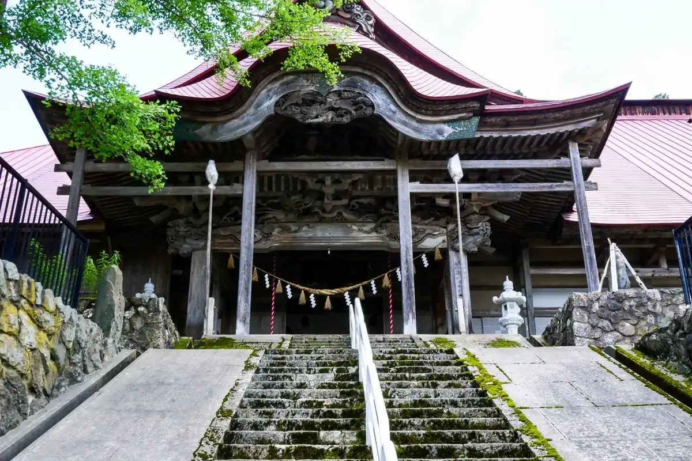
Stay
民宿橋本荘
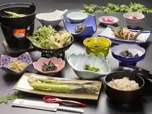
Minshuku Hashimoto Sou
Guesthouse (minshuku) in Nishikawa, Yamagata.
月山志津温泉 旅館仙台屋
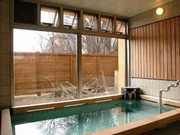
Gassan Shizu Onsen Ryokan Sendai Ya
Ryokan inn in Nishikawa, Yamagata.
Dining
出羽屋
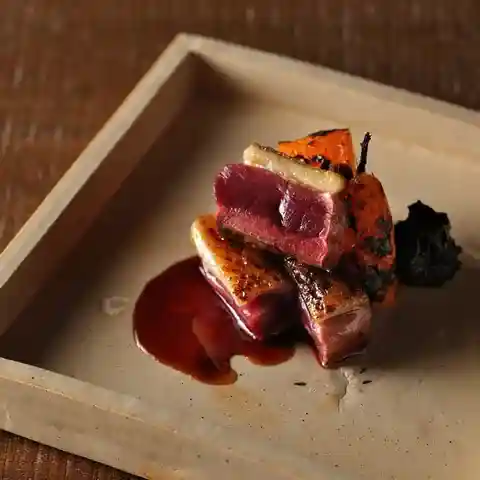
Dewa Ya
Local-cuisine restaurant in Nishikawa, Yamagata.
玉貴
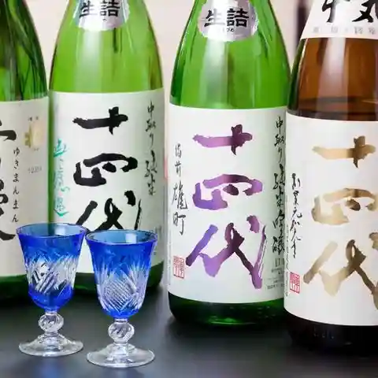
Gyokuki
Japanese restaurant in Nishikawa, Yamagata.
武兵エそば
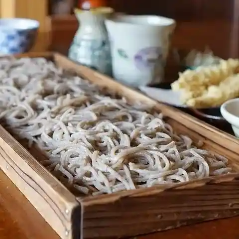
Takeshi Hei E Soba
Soba restaurant in Nishikawa, Yamagata.
道の駅にしかわ 月山銘水館 売店
Michi No Eki Nishikawa Gassan Mei Mizu Kan Baiten
Gelato and ice-cream shop in Nishikawa, Yamagata.
蛙の子
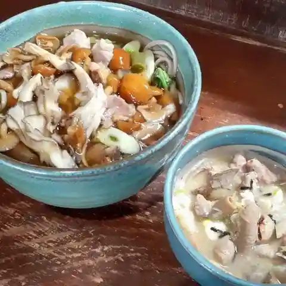
Kaeru No Ko
Soba restaurant in Nishikawa, Yamagata.
地ビールレストラン
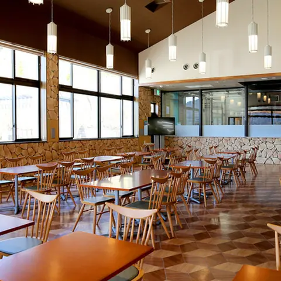
Chi Biiruresutoran
Steakhouse in Nishikawa, Yamagata.
やまろく食堂
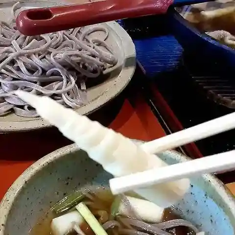
Yamaroku Shokudou
Soba restaurant in Nishikawa, Yamagata.
道の駅 にしかわ いきいき直売所・売店
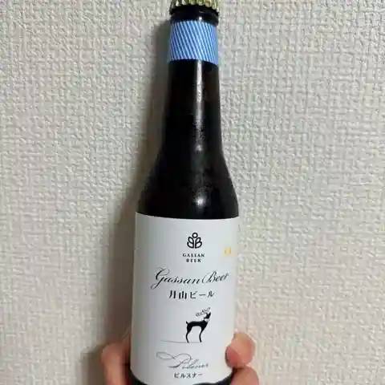
Michi No Eki Nishikawa Ikiiki Chokubai Tokoro Baiten
Roadside-station eatery in Nishikawa, Yamagata.
関の茶屋
Kan No Chaya
Japanese sweets café in Nishikawa, Yamagata.
変若水の湯つたや
Hen Jakusui No Yu Tsutaya
Inn restaurant in Nishikawa, Yamagata.
手作り 茶屋だんご かたくら
Tezukuri Chaya Dango Katakura
Japanese sweets shop in Nishikawa, Yamagata.
六十里越ドライブイン
Rokujuu Sato Etsu Doraibuin
Shokudo diner in Nishikawa, Yamagata.
美味しんぼあきば
Oishinbo Akiba
Izakaya in Nishikawa, Yamagata.
肉そば・呑み処 松
Niku Soba Nomi Tokoro Matsu
Soba restaurant in Nishikawa, Yamagata.
月山リゾートイン
Gassan Rizootoin
Inn restaurant in Nishikawa, Yamagata.
そば処出羽屋
Soba Tokoro Dewa Ya
Soba restaurant in Nishikawa, Yamagata.
美どり亭
Bi Dori Tei
Ramen shop in Nishikawa, Yamagata.
菓子処 松月
Kashi Tokoro Matsuzuki
Japanese sweets shop in Nishikawa, Yamagata.
月山湖売店
Gassan Mizuumi Baiten
Japanese restaurant in Nishikawa, Yamagata.
渓声庵
Keisei Iori
Soba restaurant in Nishikawa, Yamagata.
旅館 仙台屋
Ryokan Sendai Ya
Inn restaurant in Nishikawa, Yamagata.
ゆみはり茶屋
Yumihari Chaya
Burger shop in Nishikawa, Yamagata.
清水屋旅館
Shimizuya Ryokan
Inn restaurant in Nishikawa, Yamagata.
ロッヂやつなみ
Rojji Yatsunami
Inn restaurant in Nishikawa, Yamagata.
Sights
Nishikawa Michi-no-Eki
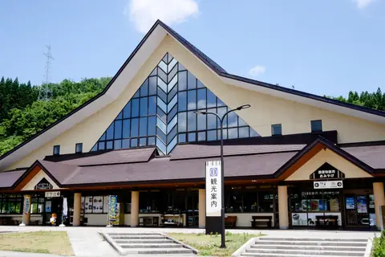
A roadside station selling fresh local vegetables, fruit, mountain vegetables and mushrooms, with a restaurant using local ingredients. It also has Yamagata's only craft beer brewery and the Mizusawa Onsen bath house.
Gassan Shizu Onsen
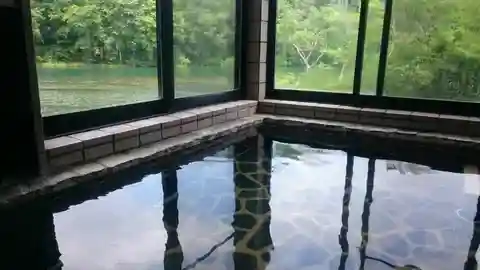
A hot spring full of nature that springs in the Mt. Gassan!
Mt. Gassan Ski Resort
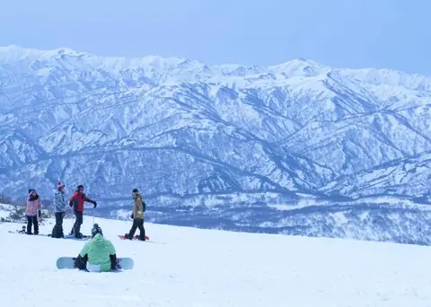
While other ski resorts are closed, the Mt. Gassan Ski Resort opens in April until July.